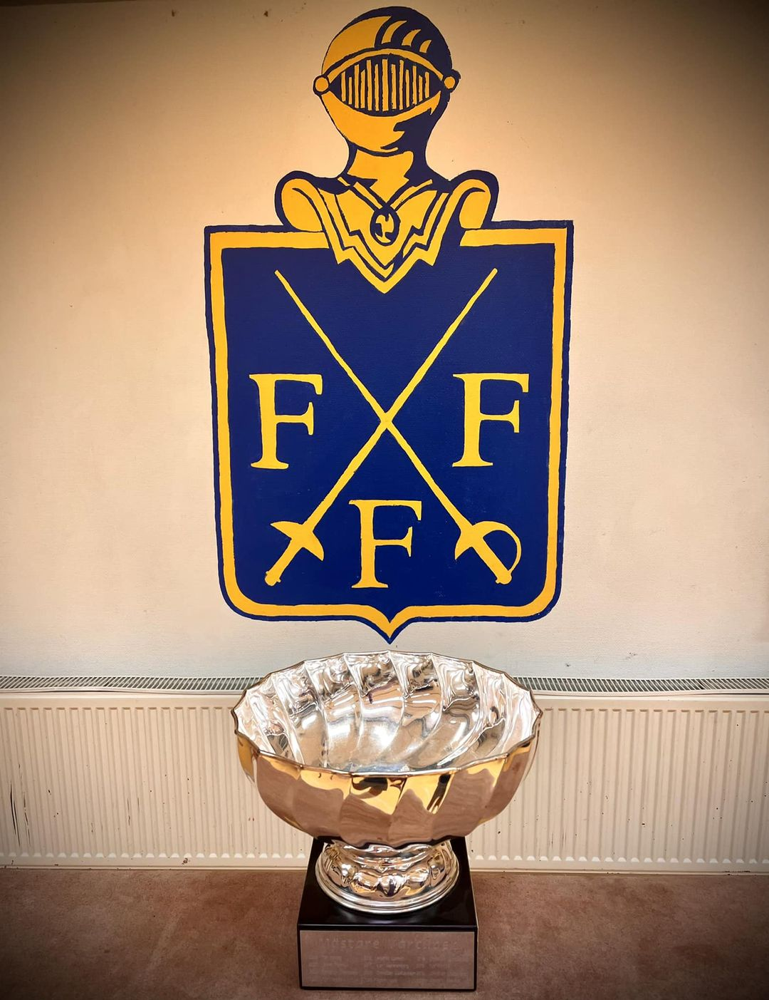

Deltävling 1, den 25 jan, kl. 19:00
Deltävling 2, den 15 feb, kl. 19:00
Deltävling 3, den 26 mar, kl. 19:00
Deltävling 4, den 25 apr, kl. 19:00
Deltävling 5, den 16 maj, kl. 19:00
Välkommen till årets upplaga av Vårcupen!
Nu behöver ni inte längre vara ledsna över att KM är slut. Istället ska vi vända blickarna mot det nya årets första stora händelse – Vårcupen 2024! Det finns få (om ens några) tävlingar i fäktningens universum som kan mäta sig med den här mäktiga tävlingen.
Som vanligt består tävlingsledningen av Tor Forsse med hjälp av Andrés Gomez och ni är självfallet välkomna till oss för alla tänkbara frågor.
För såväl gamla som nya deltagare vill tävlingsarrangörerna ta tillfället i akt att inte bara hälsa er hjärtligt välkomna utan också sprida lite matnyttig information om tävlingen för att ni på så vis ska kunna göra det mesta av denna fäktmässiga hödpunkt.

Tävlingsform
Vårupen är en serietävling med 5 deltävlingar. Man får poäng baserat på placering och resultaten från de 4 bästa deltävlingarna räknas ihop för den slutgiltiga placeringen.
Vi börjar med en pouleomgång, rankingen i den första deltävlingen baseras på slutresultatet från KM. Efter den första omgågnen fortsätter tävlingen med direkteliminering. Fram till kvartsfinalerna är det 10-stötsmatcher som gäller, från och med kvartsfinalen går vi över till 15-stötsmatcher.
Regler, mm
Utrustning: se till att ha fungerande utrusting och reservapen. En värja räcker inte.
Kom i tid: kommer du efter att tävlingen har startat får du troligen inte delta. Tävlingsledningen beslutar.
Fullfölj tävlingen: om ni startar måste ni också fullfölja tävlingen till dess att den är slut. Enda undantaget är skada.
Protokoll: var varsamma med protokoll. Skriv läsligt och smutsa inte ned protokollen.
Som vanligt är det glädje, trygghet och gemenskap som gäller. Är du osäker på FFFs policys så läs på föreningens hemsida.
Tid och plats
Alla tävlingar hålls på FFFs fäktsal och tävlingsstart är klockan 19:00. Anmälning kan göras från kl. 18:45
Här har ni tävlingsdatumen:
OBS!
Anmälningarna öppnar kl. 18:45 och start är kl. 19:00. Kommer ni sent är det troligt att ni inte får delta
Poängsystem
Poängsumman från de 4 bästa placeringarna räknas samman och den fäktare med flest poäng vinner. Om flera fäktare har samma poäng vid sammanräkningen avgörs placeringen av bästa placeringen, dvs flest 1:a platser, flest 2:a platser, etc. Om även där lika avgörs placeringarna 1-3 genom omfäktning.
Så här fördelas poängen
Placering — Poäng
1 — 32 poäng
2 — 26 poäng
3 — 21 poäng
4 — 19 poäng
5 till 8 — 14 poäng
9 till 16 — 8 poäng
17 till 32 — 4 poäng
Innehåll och texter
Allt innehåll på den här webbsidan har skapats av Tor och Andrés för att informera, samt möjligen roa och förarga, alla som är intresserade av Vårcupen. Vi ser gärna att ni återkopplar till oss om ni har några önskemål eller om ni anser att det finns mer att göra för att förbättra tävlingen eller tävlingsrapporteringen.